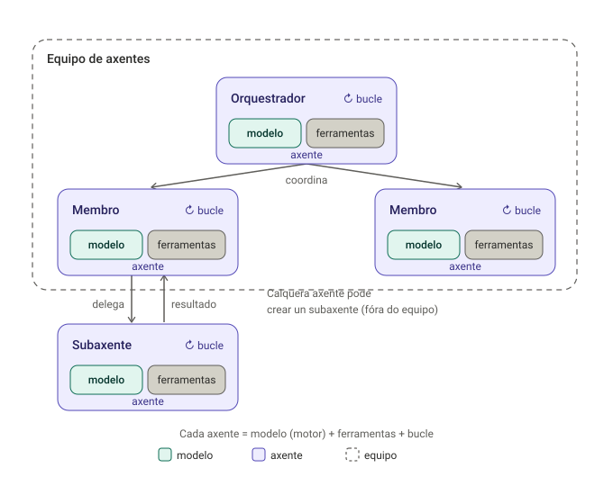
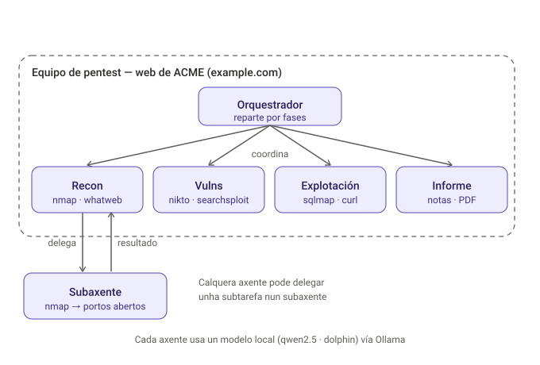

Modelos de IA locais (Ollama)
Modelos de IA locais (Ollama) — soberanía de datos
Cheat-sheet oficial
A Referencia de comandos CLI da
documentación oficial de Ollama recolle todos os comandos dispoñibles
(pull, run, create, cp, rm...). Convén telo a man mentres
traballas coa ferramenta.
Que é un modelo de IA?
Un modelo de linguaxe (o tipo de IA que usan Claude, ChatGPT, Gemini ou Ollama) é un programa adestrado con enormes cantidades de texto para facer unha soa cousa moi ben: predicir cal é a palabra máis probable que veña a continuación, dado o texto anterior. Repetindo esa predición unha e outra vez, palabra a palabra, o modelo constrúe respostas enteiras.
Isto ten implicacións importantes que convén ter claras dende o principio:
- Non é unha base de datos nin un buscador. Un modelo local (ou en liña) non "busca" a resposta nun sitio, nin ten gardado un documento con "a resposta correcta" para cada pregunta. Xera o texto sobre a marcha, en base ao que aprendeu durante o adestramento.
- Pode equivocarse con total seguridade aparente (o que se coñece como alucinación): como o modelo xera a palabra máis probable, pode producir información incorrecta ou inventada expresada co mesmo ton confiado ca unha correcta. Isto é especialmente relevante en pentesting: verifica sempre o que suxire un modelo (un exploit, un comando, unha interpretación dun resultado) antes de aplicalo.
- Un só modelo serve para moitas tarefas distintas (conversar, xerar código, traducir, resumir...) porque todas son, no fondo, "predicir a seguinte palabra" aplicado a contextos diferentes — non hai un módulo separado para cada tarefa.
- "Local" ou "en liña" non cambia como funciona o modelo, só onde se executa. Claude, ChatGPT e Gemini son modelos moito máis grandes executados nos servidores da empresa que os fai; os modelos de Ollama son máis pequenos e execútanse enteiramente na túa máquina. O funcionamento interno (predicir texto) é o mesmo nos dous casos.
Por que traballar cun modelo local?
É habitual apoiarse en ferramentas de IA en liña (Claude, ChatGPT, Gemini) para estudar, resolver dúbidas ou revisar código. Nun pentest profesional contratado, con todo, isto deixa de ser tan sinxelo: moitos contratos de auditoría inclúen cláusulas de confidencialidade e o RGPD esixe control sobre onde van os datos que manexas (nomes de hosts do cliente, vulnerabilidades atopadas, credenciais, fragmentos de código interno...). Enviar eses datos a un servizo de IA en liña de terceiros pode incumprir o contrato ou a normativa, aínda que sexa sen mala intención.
Que é o RGPD?
O Regulamento Xeral de Protección de Datos (RGPD) é a lei da Unión Europea que regula como se recollen, tratan e protexen os datos persoais (nomes, contrasinais, direccións IP, calquera dato que identifique a unha persoa). Obriga a que as empresas saiban en todo momento onde están os datos que manexan e con quen os comparten, e establece sancións importantes se se envían datos a terceiros sen o consentimento ou a base legal adecuada. Nun pentest, os "datos persoais" poden aparecer en calquera parte: un correo dun empregado, un nome de usuario, un hash de contrasinal... por iso onde executas as ferramentas de IA que os len tamén importa legalmente, non só tecnicamente.
Ollama resolve isto executando modelos de linguaxe de código aberto enteiramente na túa propia máquina, sen que ningún dato saia dela. É máis lento e menos potente que os grandes modelos comerciais, pero para moitas tarefas de apoio (explicar un concepto, revisar un script, suxerir o seguinte paso nunha auditoría) é máis que suficiente, e garante que ningún dato do cliente sae da túa rede.
Que hardware fai falla?
Ollama pode executarse en CPU, pero vai máis fluído con GPU. Non fai falla que sexa dun fabricante concreto:
- NVIDIA: acelera vía CUDA automaticamente, con polo menos 6-8 GB de VRAM recomendados.
- AMD: acelera vía ROCm, en tarxetas compatibles.
- Apple Silicon (M1/M2/M3/M4): acelera vía Metal automaticamente en macOS.
- Sen GPU dedicada (ou GPU non soportada): funciona igual en CPU, só que máis lento canto máis grande sexa o modelo.
Canto máis grande o modelo, máis VRAM e RAM de sistema necesitas. Esta unidade inclúe cinco Prácticas Taller complementarias. As Prácticas 1 e 2 presentan alternativas de despregue; as Prácticas 3, 4 e 5 amplían progresivamente o traballo con axentes de IA.
Que significa "3B", "8B"...? Parámetros dun modelo
Cando ves un nome de modelo en Ollama como llama3.2:3b ou dolphin-llama3:8b,
ese número (3B, 8B) indica os parámetros do modelo, en miles de millóns
(B de billion, "millardo" en inglés).
Que é un parámetro?
Un modelo de linguaxe é, por dentro, unha rede neuronal: millóns ou miles de millóns de números (pesos) que determinan como o modelo relaciona palabras, conceptos e contextos entre si. Cada un deses números é un parámetro. Non hai "regras" escritas á man dentro do modelo — todo o que "sabe" está codificado nese enorme conxunto de pesos, axustados durante o adestramento.
Unha forma sinxela de velo: imaxina que cada parámetro é unha pequena regra numérica aprendida ("se aparece tal palabra despois de tal outra, é máis probable que veña isto"). Un modelo de 3B ten preto de 3.000 millóns desas regras; un de 8B ten preto de 8.000 millóns. Ningunha regra illada significa nada por si soa, pero xuntas permiten que o modelo xenere respostas coherentes. Cantas máis regras (parámetros) ten un modelo, máis matices e relacións complexas pode capturar entre conceptos — pero tamén ocupa máis memoria e require máis cálculo para procesar cada palabra que xera.
Como se constrúen (en resumo, sen entrar en detalle técnico):
- Preadestramento (pretraining): o modelo le cantidades masivas de texto público (libros, código, páxinas web...) e aprende a predicir a seguinte palabra dunha secuencia. Isto require enormes clústeres de GPU e adoita custar millóns de euros — por iso case ningún estudante nin pequena empresa adestra un modelo dende cero, senón que parte dun xa feito (por Meta, Microsoft, Mistral...).
- Axuste por instrucións (fine-tuning): o modelo base apréndese a seguir instrucións e a manter unha conversa, non só a completar texto.
- Aliñamento e filtros de seguridade (alignment): adéstrase
adicionalmente para que rexeite certas peticións (contido perigoso,
ilegal...). É xustamente este último paso o que os modelos decensored
(como
dolphin-llama3oudolphin-phi) reducen ou eliminan de forma deliberada, volvendo entrenar sobre o modelo base para que responda sen tantas restricións — por iso son útiles nun contexto profesional de pentesting autorizado, e por iso tamén hai que usalos con responsabilidade.
Por que o ficheiro descargado pesa menos do que "debería": un modelo de
8.000 millóns de parámetros, se cada un ocupase 4 bytes (precisión estándar),
pesaría uns 32 GB. Ollama descarga versións cuantizadas (quantized),
onde cada parámetro se garda con menos precisión (por exemplo 4 bits en vez
de 32) para reducir moito o tamaño e a memoria necesaria, a cambio dunha
perda de calidade case sempre pequena. É por iso que dolphin-llama3:8b
ocupa uns 4,7 GB e non 32 GB.
Táboa comparativa dos modelos que usamos nesta unidade:
| Modelo | Parámetros | Tamaño descarga | Onde o usamos |
|---|---|---|---|
llama3.2:3b |
~3.200 millóns | ~2 GB | Dentro dunha VM (sen GPU) |
qwen2.5:3b |
~3.100 millóns | ~1,9 GB | Axentes e multiaxentes (VM sen GPU) |
dolphin-phi |
~2.700 millóns | ~1,6 GB | Alternativa lixeira decensored |
dolphin-llama3:8b |
~8.000 millóns | ~4,7 GB | Equipo anfitrión (con GPU) |
En xeral: máis parámetros → máis capacidade de razoamento e matiz, pero máis lento e con máis requisitos de hardware. Para tarefas de apoio puntuais (como as desta unidade), un modelo pequeno adoita ser dabondo; para un uso profesional máis esixente, compensa un modelo maior se o hardware o permite.
Non todo modelo libre é practicable en local
"Libre" (open-weight) non é o mesmo que "descargable por un estudante".
Moitos dos modelos open-weight máis potentes de 2026 (DeepSeek V4, Kimi
K2/K3, Qwen3.5, GLM-5) pesan centos de GB unha vez cuantizados e só se
poden executar en clústeres de varias GPU de centro de datos — na
práctica, para un particular son tan inaccesibles coma un modelo pechado,
aínda que a licenza permita descargalos. Os que realmente encaixan no
obxectivo desta unidade (soberanía de datos nun portátil normal) son os
pequenos (3B-8B, 2-5 GB), que é xustamente a categoría de
llama3.2:3b, dolphin-phi e dolphin-llama3:8b.
Onde probar modelos grandes gratis, sen instalar nada
Se queres comparar a calidade dun modelo pequeno local cun modelo grande (que non poderías executar na túa máquina), podes probalos gratuitamente en liña, sen tarxeta nin instalación:
Chat oficiais de cada modelo:
| Sitio | Modelo(s) |
|---|---|
| chat.deepseek.com | DeepSeek (V4, R1...) |
| chat.qwen.ai | Qwen (3.5, 3.6...) |
| chat.z.ai | GLM (Zhipu/Z.ai) |
| kimi.com | Kimi (Moonshot AI) |
| meta.ai | Llama (versión aloxada por Meta) |
Comparadores/agregadores (varios modelos nun só sitio):
| Sitio | Que ofrece |
|---|---|
| Hugging Face Chat (HuggingChat) | Chat gratuíto con moitos modelos open-weight distintos, sen conta de pago |
| LMArena | Comparación "a cegas" lado a lado entre dous modelos calquera (open e pechados) |
| OpenRouter | Moitos modelos con capa gratuíta marcada explicitamente como :free; require rexistro mais non tarxeta para os gratuítos |
| Groq | Inferencia moi rápida de modelos abertos (Llama, etc.) con capa gratuíta xenerosa |
Exercicio suxerido
Fai a mesma pregunta técnica (por exemplo, sobre unha reverse shell) no teu modelo local e nun modelo grande en HuggingChat ou LMArena. Compara a profundidade e precisión das respostas — é a mellor forma de entender de forma práctica a táboa de parámetros de máis arriba.
Para seguir que modelos novos van saíndo e comparativas actualizadas, estas páxinas actualízanse continuamente (a diferenza de calquera artigo ou táboa como esta, que queda desactualizada en cuestión de meses):
| Sitio | Que ofrece |
|---|---|
| LMArena | Ranking por preferencia humana: miles de persoas votan ás cegas entre respostas de dous modelos, e sácase unha clasificación tipo Elo (como no xadrez). Inclúe modelos abertos e pechados xuntos |
| Artificial Analysis | Benchmarks independentes de calidade, prezo e velocidade por modelo e por provedor de API — útil para comparar non só "cal responde mellor" senón "cal compensa máis" |
| Hugging Face Open LLM Leaderboard | Especializado só en modelos abertos, con benchmarks académicos estandarizados (MMLU, GPQA...). Nota: está arquivado dende 2025 (xa non engade modelos novos), así que serve como referencia histórica, non para as últimas novidades |
Ningún leaderboard é a verdade absoluta
Cada un mide cousas distintas (preferencia humana, benchmarks académicos, prezo/rendemento...), e un modelo pode ir primeiro nun e mediano noutro. Úsaos para facer unha primeira selección, non como xuízo definitivo.
Que é un Modelfile?
Ao longo das prácticas desta unidade creas varias veces un ficheiro chamado
Modelfile. É o "plano de construción" que le Ollama para xerar un modelo
personalizado a partir dun xa existente (ollama create nome -f Modelfile),
sen ter que reentrenar nada — só engade instrucións por riba do modelo base.
Cada liña dun Modelfile é unha instrución. As máis relevantes para este curso:
| Instrución | Para que serve | Exemplo |
|---|---|---|
FROM (obrigatoria) |
Modelo base sobre o que se constrúe. Pode ser un modelo xa descargado (llama3.2:3b) ou un ficheiro local (./modelo.gguf) |
FROM llama3.2:3b |
SYSTEM |
Mensaxe de sistema: fixa o rol/comportamento do modelo en cada conversa, sen ter que repetilo ti cada vez | SYSTEM """Es un asistente de pentesting...""" |
PARAMETER |
Axusta como xera texto o modelo (ver táboa seguinte) | PARAMETER temperature 0.7 |
TEMPLATE |
O formato exacto no que se monta o prompt final antes de envialo ao modelo (avanzado; normalmente non fai falla tocalo) | — |
ADAPTER |
Engade un adaptador LoRA (un axuste lixeiro adicional, adestrado á parte) sobre o modelo base | ADAPTER ./axuste.gguf |
MESSAGE |
Predefine un historial de conversa de exemplo, para guiar o estilo de resposta | MESSAGE user "Ola" |
LICENSE |
Indica a licenza legal baixo a que se comparte o modelo | — |
PARAMETER máis útiles para empezar:
| Parámetro | Que controla | Valores típicos |
|---|---|---|
temperature |
Canto de "creativo"/aleatorio é. Valores baixos → respostas máis previsibles e consistentes; valores altos → máis variadas, pero tamén máis propensas a desvaríos | 0.0 a 1.0 (por defecto adoita ser 0.7-0.8) |
num_ctx |
Tamaño da xanela de contexto: cantos tokens (fragmentos de texto) pode "lembrar" o modelo dunha conversa | 2048, 4096, 8192... |
stop |
Cadea de texto que, se aparece, corta a xeración de resposta aí mesmo | PARAMETER stop "</s>" |
Un Modelfile mínimo só precisa FROM e SYSTEM:
Ver o Modelfile dun modelo xa creado
Podes inspeccionar en calquera momento como está construído un modelo (o teu ou un descargado) con:
Pódense crear axentes, subaxentes e equipos de axentes con Ollama?
Antes de entrar en detalle, aclaremos catro conceptos que adoitan mesturarse: modelo, axente, Ollama e Cline. Van de menos a máis.
1. O modelo (LLM) só. Un modelo de linguaxe só sabe facer unha cousa:
recibir texto e devolver texto. Non toca ficheiros nin executa nada. Se lle
pides "crea saludo.py", el só che escribe o código como resposta; non
aparece ningún ficheiro. As "mans" non as ten o modelo.
2. O axente. Un axente é un programa que envolve o modelo nun bucle con
ferramentas. Dálle ao modelo un obxectivo e unha lista de ferramentas
(ler_ficheiro, escribir_ficheiro, executar_comando, buscar_web...) e
repite este ciclo: o modelo decide que ferramenta usar → o axente
execútaa de verdade → devólvelle o resultado ao modelo → o modelo decide o
seguinte paso, ata rematar. Reparto de papeis: o modelo é o cerebro (decide),
o axente son as mans (executa). Por iso un axente si crea o ficheiro, e o
modelo só non.
Cando fai falla un axente: cando a tarefa require actuar (ficheiros, comandos,
web) ou decidir pasos sobre a marcha. Se o fluxo é fixo e ti fas ti mesmo a
entrada e a saída (input/output) coa shell, non precisas axente: por
exemplo, pasarlle a saída dun escaneo a un
modelo cun ollama run "... $(cat scan.txt)", como se ve en
Formas de executar un modelo
da práctica de «Ollama no equipo anfitrión».
3. Ollama. Ollama non é o axente: é o motor que serve o modelo.
Execútao na túa máquina e exponse para que outros o usen, cunha API
compatible con OpenAI
e co comando ollama launch. O bucle de
ferramentas, os subaxentes e o paralelo non os fai Ollama; só pon o cerebro.
ollama run a secas é un chat, non un axente que toca o teu disco.
4. Cline. Cline é o axente que
usamos nesta unidade: o programa que pon o bucle, as ferramentas concretas
(read_files, editor, bash) e a lóxica avanzada (subaxentes,
taboleiro Kanban para varios en paralelo). É de código aberto e gratuíto (a
diferenza de Claude Code,
non pide conta) e úsase dende un editor (VS Code) ou dende a liña de comandos
(cline). Necesita un modelo como cerebro; con
ollama launch cline --model qwen2.5:3b, ese cerebro é un modelo local
servido por Ollama, en vez dun de pago na nube.
Entón: Cline é o axente, e que son Claude, ChatGPT ou Gemini?
- Cline é un axente, non "unha ferramenta" solta. As súas ferramentas
son as accións que executa (
read_files,bash,nmap...). Hai outros axentes equivalentes: Claude Code, OpenCode, Aider ou OpenHands. - Claude, ChatGPT e Gemini non son un "modelo" a secas nin un "axente" a secas: son produtos en liña (unha aplicación de chat) construídos sobre un modelo moi grande. Cando só conversas con eles, estás a usar o modelo; cando activan ferramentas (buscar na web, executar código, editar ficheiros) actúan como axente. A diferenza fronte a Cline+Ollama é onde corre o modelo: nos seus servidores (os teus datos saen da túa máquina) fronte á túa propia máquina (soberanía de datos).
A cadea completa:
TI ── dás o obxectivo ──▶ CLINE (o AXENTE: bucle + ferramentas + orquestración Kanban)
│ "que fago agora?"
▼
OLLAMA (o MOTOR: serve o modelo por unha API)
│
▼
MODELO (o CEREBRO: decide, pero só devolve texto)
Cline decide que hai que facer preguntándolle ao modelo e executa as
accións; Ollama só fai correr o modelo; o modelo só pensa. Por iso, para unha
tarefa guionizada onde ti xa fixaches os pasos, podes prescindir de calquera
axente (non só de Cline) e resolvela ti coa shell — por exemplo coa
substitución de comandos ollama run "... $(cat scan.txt)" que se ve en
Formas de executar un modelo
da práctica de «Ollama no equipo anfitrión». Pero cando varios axentes deben decidir sobre a marcha —en
paralelo ou encadeados, como na
Axentes e multiaxentes— si fai
falla un axente (nós usamos Cline).
O $(cat) vale para ficheiros pequenos
A substitución de comandos $(cat scan.txt) mete o contido do ficheiro na
propia liña de comando, así que serve ben para saídas curtas (un nmap, un
script pequeno). Para ficheiros grandes pode superar o límite de lonxitude
de argumentos da shell ou a xanela de contexto do modelo; nese caso usa a
redirección ollama run modelo < ficheiro ou o pipe
cat ficheiro | ollama run modelo (ambas na mesma sección da práctica de «Ollama no equipo anfitrión»).
Para velo dun golpe de vista (o mesmo que describen os catro puntos de arriba, en forma de esquema):

Cada caixa de axente leva dentro un modelo (o motor) máis as súas ferramentas e o bucle. Un equipo (o marco descontinuo) son varios axentes coordinados por un orquestrador; un subaxente vive fóra e é un axente que outro crea para unha subtarefa concreta, devolvendo só o resultado.
Ollo cos dous sentidos de «ferramenta»
No diagrama e na táboa de abaixo, ferramenta significa unha acción que
o axente pode executar (nmap, editar un ficheiro, correr un comando). É un
uso distinto de cando, en linguaxe corrente, se lle chama "ferramenta" a un
programa coma Cline: nesta unidade Cline é o axente (o programa que
orquestra), non unha das accións. Resumo: o modelo pensa, Cline (o axente)
decide e actúa, e as ferramentas son as accións concretas coas que actúa.
Con exemplos concretos:
| Peza | Que é | Exemplos concretos |
|---|---|---|
| Modelo | O motor de IA: dado texto, predí texto. Non le ficheiros nin executa nada por si só. | qwen2.5:3b, llama3.2:3b, dolphin-llama3:8b; tamén mistral, gemma2, phi3 |
| Axente | O programa que envolve un modelo e lle engade obxectivo, ferramentas e bucle. | Cline (o que usamos aquí, motorizado por Ollama); tamén Claude Code, OpenCode, Aider, OpenHands |
| Ferramentas | O que lle dá "mans" ao axente para actuar. Non son o axente: son o que o axente executa. | En código: ler/escribir ficheiros, shell, git, correr tests. Nun pentest: nmap, nikto, gobuster/ffuf, sqlmap, curl, whatweb, searchsploit |
| Subaxente | Axente que outro axente crea para unha subtarefa acoutada; devolve só o resultado. | "Executa nmap e devólveme só os portos abertos", "analiza a saída de nikto e lista os CVE candidatos", "busca no código onde se valida o login" |
| Equipo de axentes | Varios axentes con roles distintos, coordinados cara a un obxectivo común. | Analista + revisor + redactor orquestrados con CrewAI; a Axentes e multiaxentes (Paso 8) é un pipeline manual de chamadas |
Aclarado isto, vexamos que parte de todo iso fai Ollama e cal non.
A resposta correcta ten un matiz importante: Ollama por si só non ten a súa propia lóxica de subaxentes nin equipos. O que fai é dúas cousas moi concretas, e a orquestración de varios axentes sempre a pon outra ferramenta que usa Ollama como motor.
O que Ollama SI fai por si só
- Servir o modelo: pon o "cerebro" que responde ás preguntas e decide que ferramentas usar. As ferramentas execútaas quen o usa por riba (Cline, Claude Code...).
- Busca web integrada: calquera ferramenta que use Ollama pode buscar na web sen configurar nada máis (nin MCP nin API key). Ollo: a busca faise nos servidores de Ollama, así que a consulta si sae da túa máquina; e se chamas directamente á API de busca web dende un script propio, aí si fai falla unha conta gratuíta e unha API key.
- Un chat de terminal: executar
ollamasen argumentos abre unha interface de terminal para conversar co modelo e buscar na web. Pode escribirche código como resposta, pero non crea ficheiros no teu proxecto nin executa comandos: para iso fai falla un axente coma Cline.
O que Ollama NON fai por si só
Lanzar varios axentes independentes en paralelo (subaxentes, equipos) non é unha función de Ollama — é unha función da ferramenta orquestradora que o usa por riba. A proba máis clara: a propia documentación de Ollama chama a isto "Subagents in Claude Code" — o mecanismo de subaxentes é de Claude Code, Ollama só lle serve de motor. O mesmo ocorre con Cline (o seu Kanban Board é lóxica propia de Cline) ou con OpenCode.
ollama launch — conectar un modelo local como motor doutras ferramentas
ollama launch claude # Claude Code, usando un modelo Ollama local como motor
ollama launch opencode # OpenCode (axente de código aberto, sen conta)
ollama launch cline # Cline (axente de código aberto, sen conta)
Con ollama launch, ferramentas coma Claude Code, Cline ou OpenCode poden
traballar con subaxentes e equipos de axentes (varios roles
especializados colaborando nunha mesma tarefa) usando un modelo a
executarse en local, sen conta de pago nin custo de API — pero a lóxica
de "como se reparten e coordinan" segue sendo desas ferramentas, non de
Ollama.
Multiaxente real en paralelo, en concreto con Cline
O modo Kanban Board de ollama launch cline lanza varios axentes á
vez dende unha interface web, cada un traballando nunha tarefa distinta —
xa é multiaxente de verdade, non tarefas en serie. É a propia arquitectura
de Cline a que fai isto posible; Ollama simplemente lle proporciona a
intelixencia (o modelo) que cada un dos axentes paralelos usa.
Para equipos de axentes totalmente personalizados
Se queres definir os teus propios roles especializados (por exemplo, un axente de recoñecemento e outro de análise, cada un cunha tarefa concreta), a arquitectura non cambia: Ollama expón unha API compatible con OpenAI, e ferramentas coma Claude Code, Cline ou frameworks (CrewAI / AutoGen / LangGraph) poden usar un modelo Ollama local como "cerebro" de cada axente do equipo, en vez de Claude en liña. A orquestración (quen fai que, en que orde) sempre a define a ferramenta, nunca Ollama.
Exemplo aplicado: un pentest á web dunha empresa
Imaxina o obxectivo de facer un pentest á web dunha empresa (example.com).
Podes montalo como un equipo de axentes, un por fase, cun orquestrador que
reparte o traballo:

Cada membro é un axente especializado nunha fase, e as súas ferramentas
son as reais desa fase; todos usan un modelo local servido por Ollama. Un
axente pode ademais crear un subaxente para unha subtarefa acoutada (no
debuxo, o de recon delega "executa nmap e devólveme os portos abertos" e
recibe só ese resultado). Así encaixa cada fase dun test de intrusión coas
pezas que acabamos de ver:
| Fase do pentest | Axente responsable | Ferramentas típicas |
|---|---|---|
| Recopilación | Axente de recon | nmap, whatweb, dig, theHarvester |
| Análise de vulnerabilidades | Axente de vulnerabilidades | nikto, nuclei, searchsploit |
| Explotación | Axente de explotación | sqlmap, curl, Metasploit |
| Post-explotación | Axente de post-explotación | shell, scripts de enumeración |
| Persistencia | Paso controlado, en laboratorio autorizado | técnicas de acceso persistente |
| Informe | Axente de informe | notas en CherryTree, exportación a PDF |
Só en contornos autorizados
Este exemplo é ilustrativo e para laboratorio propio ou con permiso explícito. Automatizar fases dun pentest con axentes non cambia nada dos límites legais e éticos do módulo.
Dúas arquitecturas adicionais: SDK Python e CrewAI
As prácticas anteriores empregan Cline como axente de codificación. Para comprender mellor a tecnoloxía e non depender dun único axente, engadimos dous enfoques complementarios:
| Arquitectura | Que controla o programador | Que controla a biblioteca | Práctica |
|---|---|---|---|
| SDK Python de Ollama | Lista de ferramentas, validación, execución, memoria da conversa e límite de iteracións | Comunicación co modelo e formato de tool_calls |
Práctica 4 — Axente propio con Python |
| CrewAI + Ollama | Axentes, roles, ferramentas, tarefas e proceso | Execución das tarefas, distribución do contexto e orquestración | Práctica 5 — Equipos de axentes con CrewAI |
Que é o tool calling (chamada a ferramentas)?
Tool calling — chamada a ferramentas
O tool calling é un mecanismo que permite a un modelo de IA solicitar o uso de funcións ou ferramentas externas para realizar operacións que non pode efectuar directamente, como ler datos, consultar unha API ou gardar un informe.
Por exemplo, un axente pode dispoñer de funcións como:
ler_evidencia("nmap.txt"): ler un ficheiro de resultados.consultar_api("https://example.com"): solicitar información a unha API.gardar_informe("informe.md"): gardar un informe no disco.executar_comando("ls -l"): executar un comando, só se a aplicación implementa e autoriza expresamente esa ferramenta.
O modelo non executa directamente as funcións: devolve unha solicitude coa ferramenta escollida e os seus argumentos. A aplicación que actúa como axente valida a solicitude, executa a función permitida e devolve o resultado ao modelo.
Isto permite construír un bucle de axente:
- O usuario solicita unha tarefa.
- O modelo decide se precisa unha ferramenta e solicita a súa chamada.
- O axente valida e executa a ferramenta autorizada.
- O resultado devólvese ao modelo.
- O modelo decide se debe continuar con outra ferramenta ou responder.
Ollama admite tool calling, pero a execución das ferramentas corresponde á aplicación que utiliza o modelo (por exemplo, Cline, CrewAI ou un programa Python propio).
Máis información: Ollama — Tool calling.
O tool calling non executa unha función automaticamente
O modelo pode responder solicitando, por exemplo, ler_evidencia("nmap.txt").
O programa que recibe esa solicitude debe decidir se a función está
permitida, executala e devolver o resultado. Se nunca se programou unha
función que escriba no disco, o modelo non terá esa capacidade por moito
que a mencione. A biblioteca oficial de Ollama ofrece este mecanismo:
Tool calling.
Equipo con tarefas fixas fronte a xestor xerárquico
Un pipeline de Cline lanzado manualmente (sección de axentes e multiaxentes, Paso 8) demostra
colaboración por estado compartido, non asignación automática de tarefas.
En CrewAI, Process.sequential coordina un equipo cos roles xa asignados;
Process.hierarchical introduce un xestor con capacidade para delegar e
revisar. Ningunha das dúas configuracións implica, por defecto, que os
axentes executen comandos arbitrarios ou que corran en paralelo.
Modelo local non significa illamento absoluto
A inferencia pode ser local, pero as ferramentas conectadas, un plugin ou a telemetría dunha biblioteca poden xerar comunicacións externas. Nas novas prácticas empregarás evidencias ficticias, sen credenciais, con ferramentas de lectura/escritura limitadas, e desactivarás a telemetría de CrewAI. Os resultados seguen requirindo revisión humana.
Que veremos nas prácticas
Esta sección inclúe cinco Prácticas Taller:
Práctica 1 — Ollama dentro dunha VM (sen GPU):
- Xeraremos unha máquina virtual Kali GNU/Linux propia mediante Vagrant (o mesmo método que en Informes con sysreptor).
- Instalaremos Ollama dentro dela e probaremos un modelo lixeiro, pensado para ir fluído só con CPU.
Práctica 2 — Ollama no equipo anfitrión (con GPU):
- Instalaremos Ollama no equipo anfitrión, aproveitando a GPU dispoñible, coa VM de Kali da práctica de «Ollama dentro dunha VM» actuando só como cliente por rede.
- Descargaremos un modelo decensored de maior tamaño.
- Crearemos un asistente personalizado de pentesting mediante un Modelfile.
Práctica 3 — Axentes e multiaxentes con Ollama:
- Instalaremos Cline CLI e conectarémolo a un modelo Ollama local
(
qwen2.5:3b, máis fiable ca Llama en tarefas con ferramentas). - Comprobaremos que un axente real le instrucións e escribe código executable, non só texto de chat.
- Lanzaremos tres axentes independentes en paralelo (taboleiro Kanban) e verificaremos, con comandos de git, que traballaron de forma illada e simultánea.
- Encadearemos execucións de Cline (desenvolvedor → tester → documentador), onde cada unha constrúe sobre o resultado da anterior. Trátase dun pipeline manual con estado compartido, non dun xestor que delega automaticamente tarefas.
Práctica 4 — Crear un axente propio con Python:
- Programaremos un axente co SDK oficial de Ollama e un bucle de tool calling.
- Crearemos ferramentas limitadas para ler evidencias e escribir un informe.
- Verificaremos permisos, límites de execución e resultados no disco.
Práctica 5 — Equipos de axentes con CrewAI:
- Definiremos analista, revisor e redactor con roles e tarefas separadas.
- Coordinaremos as tarefas de maneira secuencial mediante CrewAI e Ollama.
- Compararemos os informes do axente Python e de CrewAI e estudaremos un xestor xerárquico como ampliación avanzada.
Recursos descargables para as Prácticas 4 e 5
Para facilitar a reprodución do laboratorio, descarga os seguintes exemplos:
- Evidencia nmap.txt.
- Evidencia http.txt.
- Axente Python — axente_ollama.py.
- Equipo CrewAI — equipo_crewai.py.
Eses son recursos estáticos de MkDocs. Para executar os programas debes
copialos aos directorios de traballo indicados nas prácticas, xunto aos
ficheiros evidencias/ correspondentes.